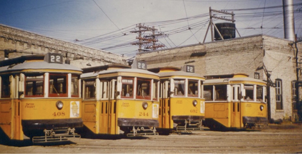

-1-MasterItem.svg)
Stories of Westminster United Church & its People / Page
50
The next year-1918, no trains were available
so the picnic was held in the town of Selkirk, Manitoba.
Transportation was by street car. The cars left the North
End Car Barns at 1:30 PM and returned from Selkirk
at 8:20 PM. Cost per traveller, 25¢. 291 adults
and 282 children attended.
Beyond our Sunday classes (junior in the morning
during Church service, senior at 3:00 in the afternoon),
we were concerned to keep our children in faith based
activities on Sunday evening and during the week. To do this we adopted the
Tuxis Boys and CGIT
(Canadian Girls in Training) programs, names not completely familiar today.
More likely we think of Scouts and Cubs, Girl Guides and Brownies programs which
Westminster
has offered with considerable success to children in the neighbourhood and
congregation for several
decades. So, what’s the difference between the programs? Why, early on, did we offer Tuxis and not
Scouts, CGIT and not Girl Guides? The answer, simply, was Jesus, present in the
one set of programs,
absent in the other.
Lord Baden-Powell was a military man of considerable reputation with a morality
we would question
today (consider the word Racism). His work was in organizing military
reconnaissance and scouting
in wars against Zulus and Boers in Africa, about which he wrote several books.
This experience
eventually prompted in him, the idea that young boys might profit from his
knowledge. In 1907
he organized a demonstration camp of his ideas. In1908 he wrote his book,
Scouting For Boys.
In 1910 he formed The Boy Scouts Association.
At the first Scout rally in the Crystal Palace in London in 1909, a number of
girls appeared dressed
in the uniform. This prompted Baden-Powell’s sister, Agnes, to initiate the Girl Guides program.
Her friend, Juliette Gordon Low, imported the Girl Guides program into the U.S.
in 1912.
Table
of Contents

Scope of Sunday school activity